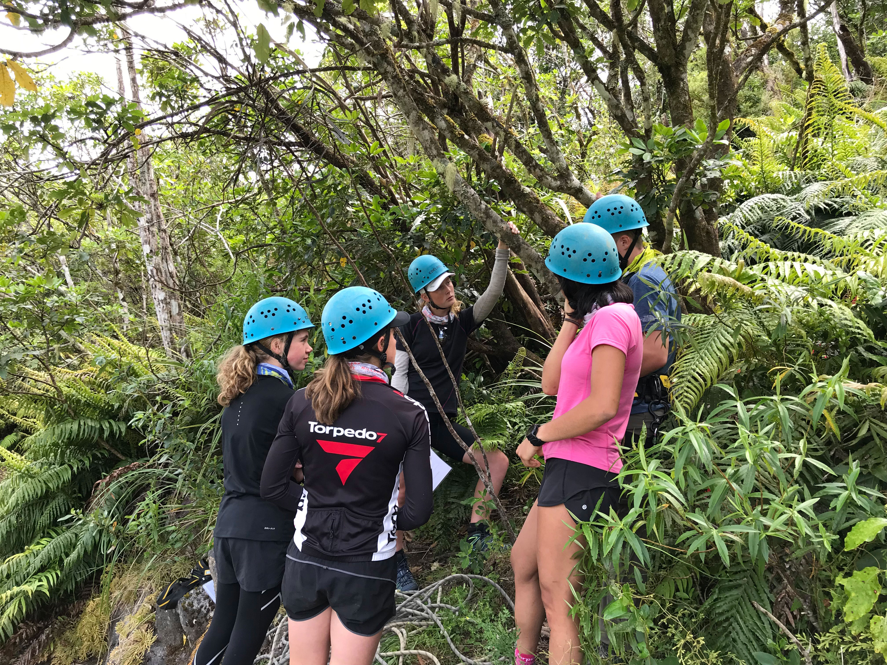
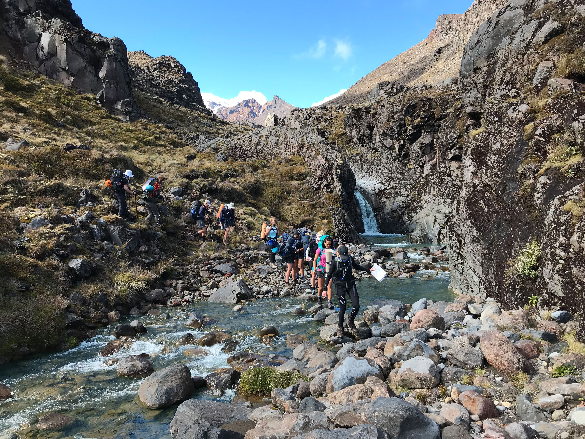

What Else?
There are many other aspects of adventure racing that may be incorporated in any race at anytime. Some are more common than others. These are referred to below.
Navigation
Navigation is of high importance in Adventure Racing. In order to be able to successfully locate and navigate checkpoints it is key to have map reading skills. However, this does not mean that everyone needs to be brilliant at navigating. 1-2 people per team should, in general, be sufficient.
 Problem Solving
Throughout an adventure race, you and your team will generally be expected to participate in ‘mystery activities’ (problem solving tasks), which require you to utilise skills like teamwork, communication, and leadership. The key to success is always teamwork and communication.
Overall Top Tips for Adventure Racing
- Always pack your bag the night before, ensuring you have all the compulsory gear for the race
- “Be BOLD, start the race COLD” (don’t start with tons of layers as you will quickly need to strip these)
- Don’t allow yourself to think negative (it is tough enough without thinking negatively)
- Consistently eat snacks throughout a race in order to keep your energy levels high